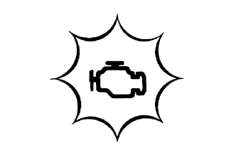

СИСТЕМА SFI > СИСТЕМА ДИАГНОСТИКИ |
| EURO-OBD (ЕВРОПЕЙСКИЙ СТАНДАРТ) |
Неисправности в узлах системы снижения токсичности отработавших газов.
Неисправности в узлах и деталях силовой передачи (влияющих на токсичность отработавших газов).
Неисправности в компьютере
Кроме того, в память ЕСМ записываются соответствующие диагностические коды неисправностей (DTC), предусмотренные требованиями стандарта ISO 15765-4. Если неисправность не проявляется в течение 3 последующих поездок, контрольная лампа неисправности автоматически выключается, однако коды DTC регистрируются в памяти ECM.
Для проверки кодов DTC подключите систему бортовой диагностики OBD или портативный диагностический прибор к разъему шины данных 3 (DLC3) автомобиля.
Коды DTC и данные фиксированного набора параметров могут быть удалены с помощью системы бортовой диагностики (Нажмите здесь).
| M-OBD (НЕЕВРОПЕЙСКИЙ СТАНДАРТ) |
|  |
| НОРМАЛЬНЫЙ РЕЖИМ И РЕЖИМ АКТИВНОЙ ДИАГНОСТИКИ |
| ЛОГИКА ДИАГНОСТИРОВАНИЯ ЗА 2 ПОЕЗДКИ |
| ДАННЫЕ ФИКСИРОВАННОГО НАБОРА ПАРАМЕТРОВ |
| НАПРЯЖЕНИЕ АККУМУЛЯТОРНОЙ БАТАРЕИ |
| MIL (контрольная лампа неисправности) |
Контрольная лампа MIL загорается при включении зажигания (IG) (двигатель не запущен).
После запуска двигателя контрольная лампа MIL должна погаснуть. Если контрольная лампа MIL продолжает гореть, это означает, что системой диагностики обнаружена неисправность либо в системе имеется нарушение.
| ПРОВЕРКА ГОТОВНОСТИ |
Подсоедините портативный диагностический прибор к DLC3.
Включите зажигание (IG).
Включите портативный диагностический прибор.
Сбросьте коды DTC (Нажмите здесь).
Выполните поездку в проверочном режиме для запуска проверки DTC.
Войдите в следующие меню: Powertrain / Engine and ECT / Utility / All Readiness.
Введите коды DTC для проверки.
Проверьте результат проверки DTC.
| Информация на дисплее прибора | Описание |
| NORMAL |
|
| ABNORMAL |
|
| INCOMPLETE |
|
| UNKNOWN |
|